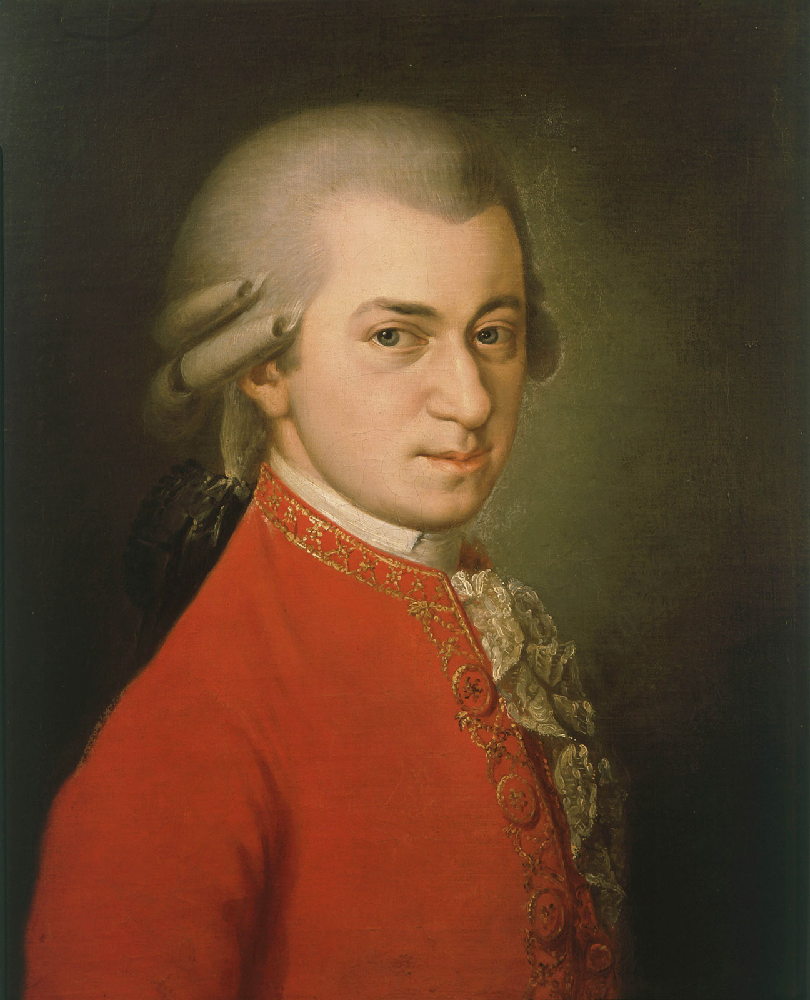
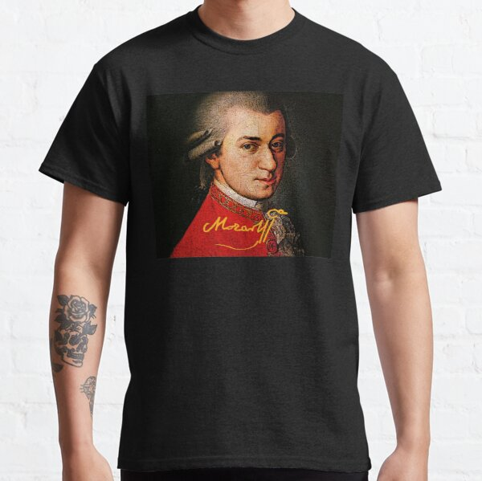

Info
Hij was een veelzijdig componist. Hij schreef vocale muziek in de genres opera, Singspiel en mis. Daarnaast componeerde hij instrumentale orkestmuziek zoals symfonieën, serenades en divertimenti en soloconcerten, vooral voor piano en orkest.
Bekendste Hits
- 1. Le nozze di Figaro KV.492
- 2. Lacrimosa uit het Requiem KV.626 in d kl.t.
- 3. Symfonie nr.41, KV.551 in C gr.t., "Jupiter"
- 4. Klarinetconcert KV.622 in A gr.t.
- 5. Sinfonia concertante voor viool, altviool en orkest KV.364 (320d) in Es gr.t.

Merch
Als je nog meer wilt van Mozart dan kan je ook altijd onze Merch uitproberen nu dat het Black Friday is zijn er enorme kortigen Tot wel 50% link
Spotify Playlist
Dit is een playlist met honderdede hits van Mozart
Wil je nog meer wil luisteren naar mozart dan is deze playlist de beste keuze voor dat dit zijn honderen nummers van Mozart.png)